دکتر مسعود گوهری منش
دانشیار گروه مهندسی مکانیک — دانشگاه تربت حیدریه
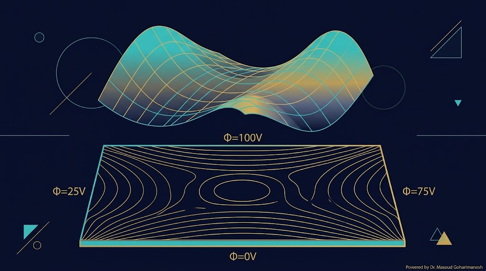
ریاضیات مهندسی پیشرفته — جلسه ۸ (پایان فاز ۲)
دکتر مسعود گوهری منش
دانشیار گروه مهندسی مکانیک — دانشگاه تربت حیدریه
$u_t = \alpha u_{xx}$ — انتشار میرا
$u_{tt} = c^2 u_{xx}$ — انتشار بدون میرا
$\nabla^2 u = 0$ — تعادل پایا (امروز)
معادله لاپلاس، پایه تحلیل توزیع پتانسیل الکترواستاتیک و انتقال حرارت پایا است — کلید حل پروژههای تیر و نانو انبرک در فاز ۳.
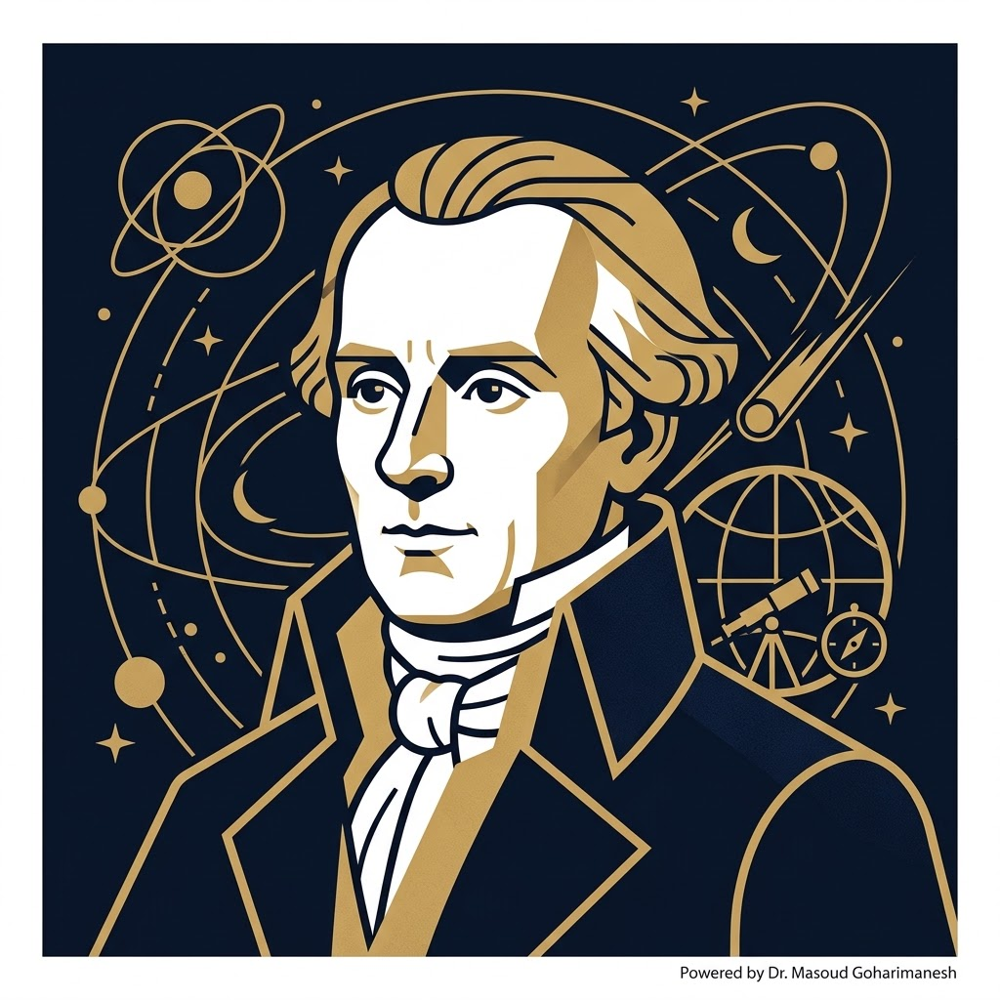
(1749–1827)
ریاضیدان و ستارهشناس فرانسوی. معادله لاپلاس را در مطالعه گرانش و الکترواستاتیک معرفی کرد.
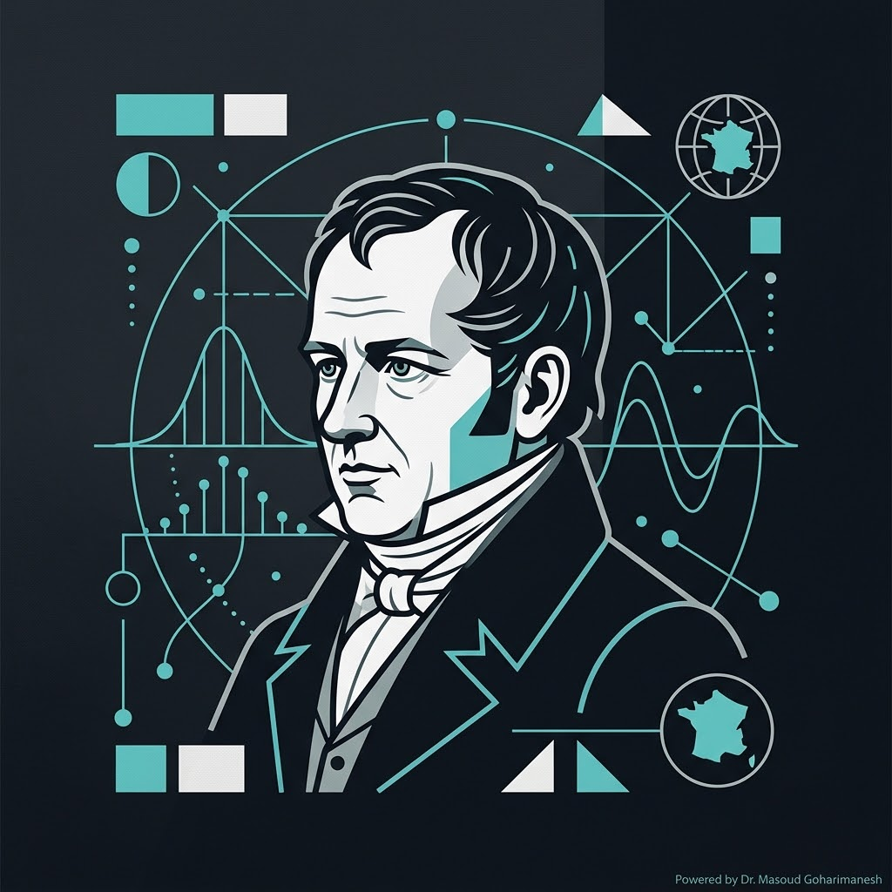
(1781–1840)
فیزیکدان و ریاضیدان فرانسوی. تعمیم معادله لاپلاس با منبع را ارائه داد.
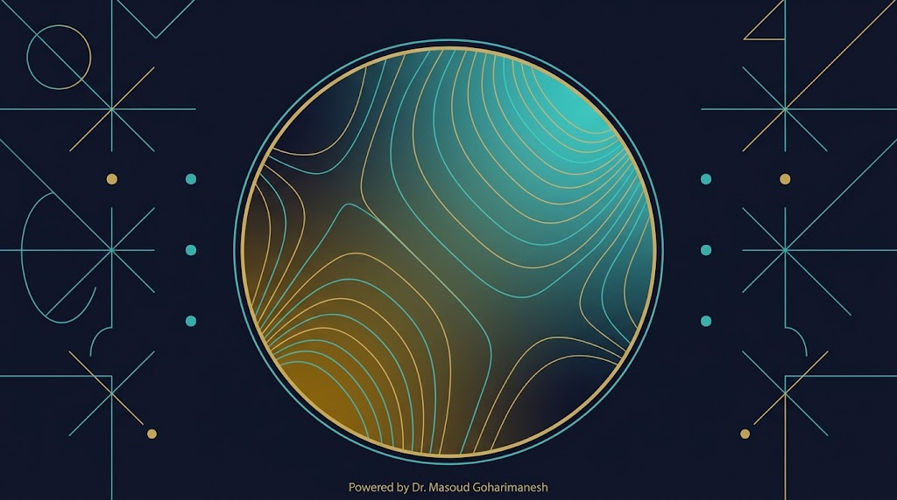
جوابهای معادله لاپلاس، توابع هارمونیک نامیده میشوند. ویژگی مهم: حداکثر و حداقل فقط روی مرز رخ میدهند.
حالت پایا (steady state) — وقتی زمان بینهایت شود، سیستم به تعادل میرسد.
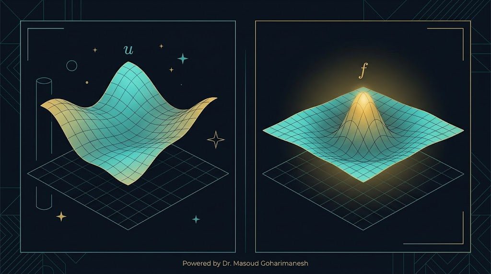
بدون منبع ($f = 0$) — ناحیه خالی از بار
با منبع ($f \neq 0$) — توزیع بار، چشمه گرما، ...
مسئله: صفحه مستطیلی $0 < x < a$، $0 < y < b$ با شرایط مرزی:
با جایگذاری در $\nabla^2 u = 0$:
مقادیر ویژه: $\lambda_n = (n\pi/a)^2$ — توابع ویژه: $X_n(x) = \sin(n\pi x/a)$
با شرط $u(x,0) = 0$، داریم $B_n = 0$. حل کلی:
از شرط $u(x, b) = f(x)$ و تعامد توابع سینوسی:
شرایط مرزی:
با $f(x) = \sin(\pi x)$ و $a = b = 1$:
از تعامد: $A_1 = 2/\sinh(\pi)$ و $A_n = 0$ برای $n > 1$.
جواب دقیقاً یک مود:
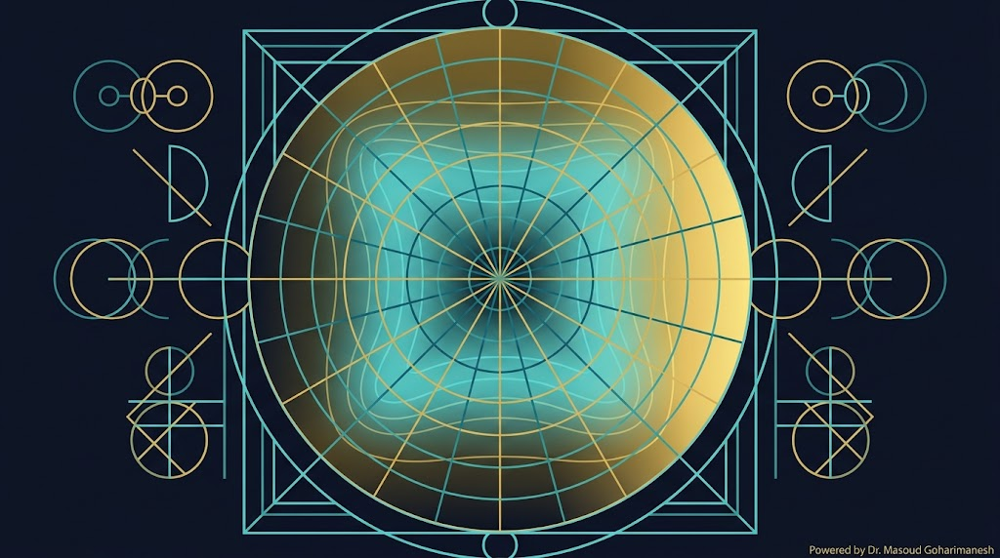
برای مسائل با هندسه دایرهای (دیسک، استوانه)، از مختصات قطبی استفاده میکنیم:
با فرض $u(r, \theta) = R(r) \Theta(\theta)$:
با اعمال شرط مرزی روی دایره $r = a$، ضرایب از سری فوریه $f(\theta)$ تعیین میشوند.
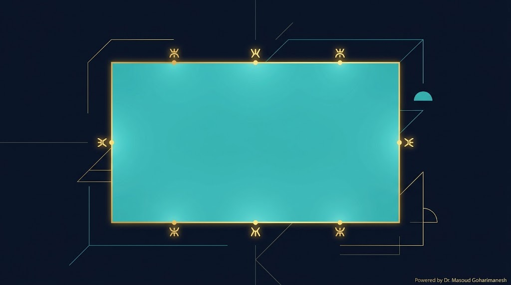
اگر $u$ یک تابع هارمونیک در ناحیه $\Omega$ باشد، آنگاه:
یعنی حداکثر و حداقل فقط روی مرز رخ میدهند، نه درون ناحیه.
اگر دو جواب $u_1$ و $u_2$ برای یک مسئله مقدار مرزی دیریکله وجود داشته باشد، آنگاه $w = u_1 - u_2$ هارمونیک است با $w = 0$ روی مرز.
طبق اصل حداکثر: $\max w = 0$ و $\min w = 0$ → $w = 0$ → $u_1 = u_2$.
مقادیر مرزی چهار ضلع را تنظیم کنید و توزیع پتانسیل درون صفحه را ببینید.
تعداد تکرار: ۰ — همگرایی با روش Gauss-Seidel
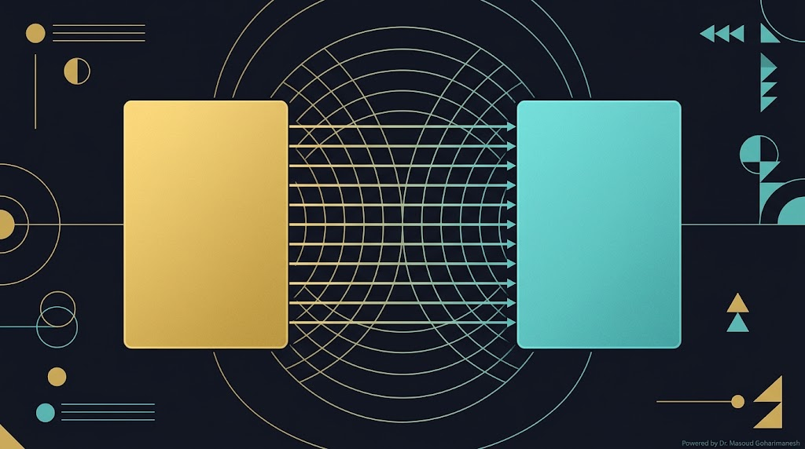
در ناحیه بدون بار ($\rho = 0$)، به معادله لاپلاس $\nabla^2 V = 0$ کاهش مییابد.
در نانو انبرک الکترواستاتیک (پروژه فاز ۳)، توزیع پتانسیل با معادله لاپلاس توصیف میشود و نیروی الکترواستاتیک متناسب با $V^2$ است.
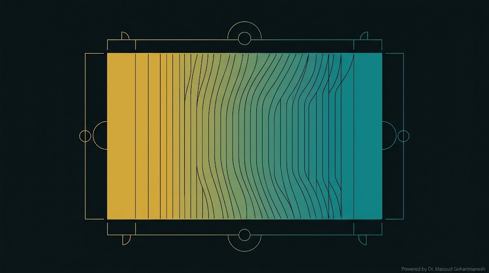
از معادله گرما $\frac{\partial T}{\partial t} = \alpha \nabla^2 T + \frac{q}{k}$، در حالت پایا ($\frac{\partial T}{\partial t} = 0$):
در نبود منبع حرارتی ($q = 0$)، معادله به لاپلاس $\nabla^2 T = 0$ تبدیل میشود.
در پروژه نانو انبرک، انتقال حرارت و الکترواستاتیک همزمان رخ میدهند و معادله کوپل PDE به وجود میآید.
% === حل معادله لاپلاس با Gauss-Seidel === clear; clc; close all; Nx = 50; Ny = 50; x = linspace(0, 1, Nx); y = linspace(0, 1, Ny); [X, Y] = meshgrid(x, y); % === شرایط مرزی === u = zeros(Ny, Nx); u(1, :) = 100; % ضلع بالا (گرم) u(end, :) = 0; % ضلع پایین (سرد) u(:, 1) = 50; % ضلع چپ u(:, end) = 50; % ضلع راست % === Gauss-Seidel === tol = 1e-6; maxIter = 10000; for iter = 1:maxIter u_old = u; for i = 2:Ny-1 for j = 2:Nx-1 u(i,j) = 0.25 * (u(i+1,j) + u(i-1,j) + u(i,j+1) + u(i,j-1)); end end if max(abs(u(:) - u_old(:))) < tol fprintf('همگرایی در %d تکرار\n', iter); break; end end % === رسم === figure('Position', [100 100 1200 500]); subplot(1,2,1); contourf(X, Y, u, 20); colorbar; xlabel('x'); ylabel('y'); title('حل لاپلاس — Contour'); subplot(1,2,2); surf(X, Y, u); shading interp; colorbar; xlabel('x'); ylabel('y'); zlabel('u(x,y)'); title('حل لاپلاس — 3D');
# === حل معادله لاپلاس با Gauss-Seidel === import numpy as np import matplotlib.pyplot as plt Nx = 50; Ny = 50 x = np.linspace(0, 1, Nx) y = np.linspace(0, 1, Ny) X, Y = np.meshgrid(x, y) # === شرایط مرزی === u = np.zeros((Ny, Nx)) u[0, :] = 100 # ضلع بالا (گرم) u[-1, :] = 0 # ضلع پایین u[:, 0] = 50 # ضلع چپ u[:, -1] = 50 # ضلع راست # === Gauss-Seidel === tol = 1e-6 for it in range(10000): u_old = u.copy() for i in range(1, Ny-1): for j in range(1, Nx-1): u[i,j] = 0.25 * (u[i+1,j] + u[i-1,j] + u[i,j+1] + u[i,j-1]) if np.max(np.abs(u - u_old)) < tol: print(f'همگرایی در {it+1} تکرار') break # === رسم === fig = plt.figure(figsize=(14, 6)) ax1 = fig.add_subplot(121) cs = ax1.contourf(X, Y, u, 20, cmap='viridis') plt.colorbar(cs, ax=ax1) ax1.set_xlabel('x'); ax1.set_ylabel('y') ax1.set_title('حل لاپلاس — Contour') ax2 = fig.add_subplot(122, projection='3d') ax2.plot_surface(X, Y, u, cmap='viridis', alpha=0.8) ax2.set_xlabel('x'); ax2.set_ylabel('y'); ax2.set_zlabel('u') ax2.set_title('حل لاپلاس — 3D') plt.tight_layout() plt.savefig('laplace_solution.png', dpi=600, bbox_inches='tight') plt.show()
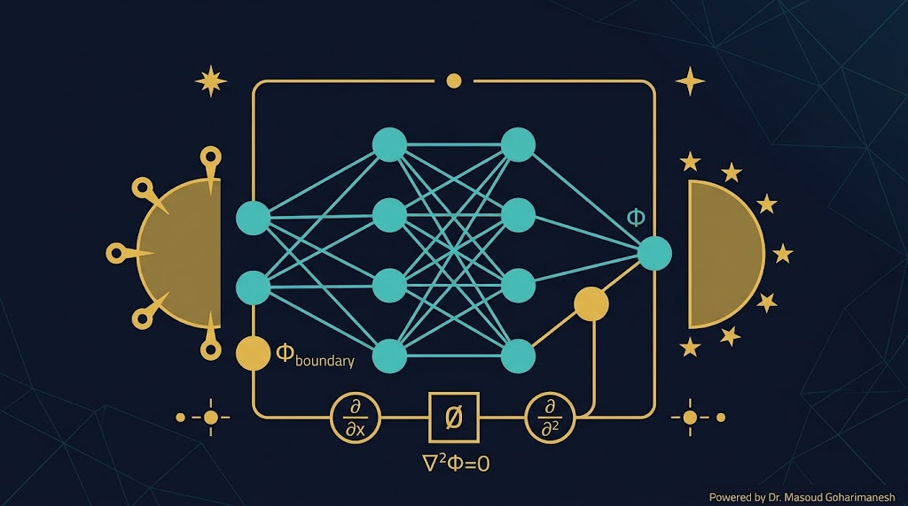
در PINN، معادله لاپلاس بهعنوان قید فیزیکی در تابع هزینه شبکه عصبی وارد میشود:
شبکه $u_\theta(x,y)$ را طوری آموزش میدهیم که هم معادله لاپلاس و هم شرایط مرزی را ارضا کند.
شرایط مرزی معلوم، جواب $u(x,y)$ را پیدا کن.
شرایط مرزی نامعلوم، با دادههای اندازهگیری تخمین بزن.
ارسال تمرینها:
m.goharimanesh@gmail.com
Subject الزامی:
[Advanced Engineering Mathematics] HW08 - نام و نام خانوادگی - شماره دانشجویی
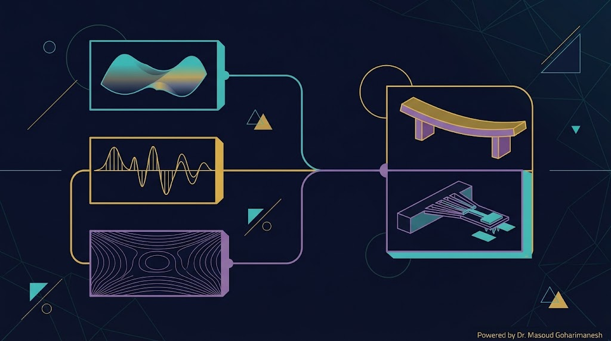
سهموی — انتشار میرا
هذلولوی — بدون میرا
بیضوی — تعادل پایا
در فاز ۲ یاد گرفتیم که سه نوع PDE را حل کنیم. در فاز ۳ این ابزارها را برای مسائل واقعی مکاترونیک به کار میبریم:
مرور صوتی مفاهیم این جلسه و فصول مرتبط با معادلات بیضوی:
۸ جلسه، ۳ نوع PDE، ابزارهای کامل حل
سری، تبدیل، FFT
SVD، مقدار ویژه
گرما، موج، لاپلاس
جلسه ۹ — معادله تیر اویلر-برنولی
PDE مرتبه ۴، شرایط مرزی مختلف تیر، کاربرد در رباتیک
دکتر مسعود گوهری منش
دانشیار گروه مهندسی مکانیک — دانشگاه تربت حیدریه
🇮🇷 با افتخار برای دانشجویان مکاترونیک 🇮🇷